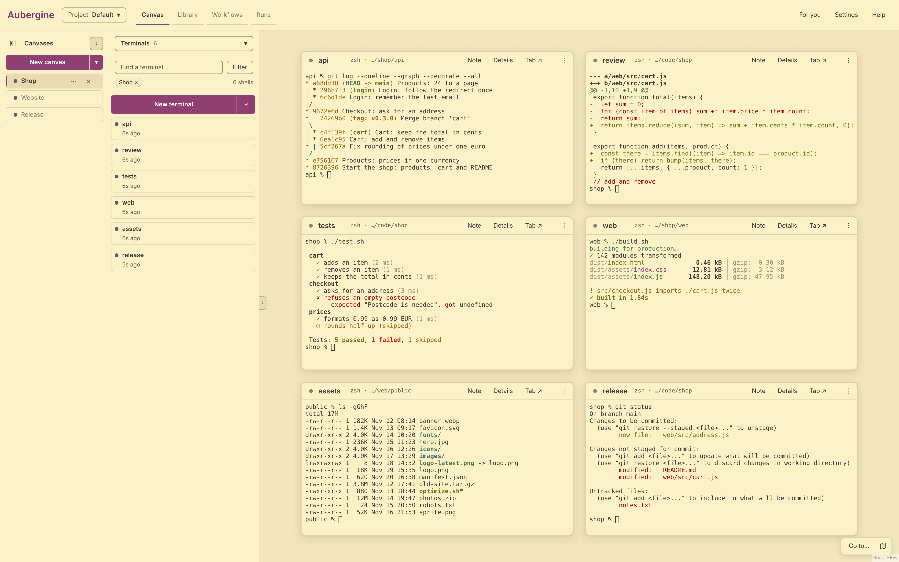
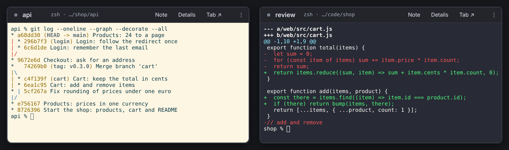

- Repensez votre terminal
- Gratuite
- Open source
- Tourne sur votre ordinateur
Le centre de contrôle de vos terminaux et agents de code IA.
Lancez Claude Code, Codex et des terminaux ordinaires côte à côte dans un seul tableau de bord, dans votre navigateur. Aubergine n’a pas de modèle à elle et ne vous demande jamais de clé.
npm install -g @meatgarden/aubergine
Puis aubergine start --open. Pour macOS, avec tmux 3.2 ou plus récent et Node.js 22 ou plus récent.

Une vraie capture de la démo fournie avec Aubergine : six terminaux sur un canevas, et celui qui vous attend.
La gestion des terminaux, repensée
Les terminaux que vous utilisez déjà, avec ce qui leur manquait : une place pour se tenir côte à côte, une mémoire, et un moyen de vous prévenir quand ils ont besoin de vous.
Gagnez en productivité
Plusieurs agents travaillent en même temps, chacun dans son propre terminal. Vous répondez à celui qui attend et laissez les autres tourner.
Une meilleure expérience développeur
Chaque terminal a un nom, une couleur, une note et sa place sur le canevas. Fermez le navigateur ou redémarrez Aubergine : ils sont toujours là.
Rien à changer
Votre shell, vos outils, vos agents et vos modèles, tels qu’ils sont. Aubergine ajoute le canevas autour d’eux et n’a pas de modèle à elle.
À quoi ça ressemble
De vraies captures de la démo fournie avec Aubergine : des agents factices, pas de vrais agents.
Tous les terminaux sur un seul canevas
Autant que vous voulez, côte à côte, chacun en direct tant qu’il est visible.

Celui qui attend se remarque
Quand un agent a besoin de vous, vous le voyez d’un bout à l’autre du canevas, et W vous y emmène.

Un terminal à part
Ouvrez n’importe quel terminal dans un onglet du navigateur à lui seul : le même terminal, pas une copie.

Dix thèmes de couleurs
La page existe en dix thèmes de couleurs, quatre clairs et six sombres. Vous en choisissez un de chaque sorte, et la page est claire, sombre ou comme votre système. Des couleurs isolées se règlent à la main dans le fichier de réglages.

Light 
Solarized light 
Gruvbox light 
Nord 
Dracula 
Gruvbox dark

Un thème pour chaque terminal
Theme… dans le menu d’un terminal le dessine dans l’un des dix, quel que soit le thème de la page. Les autres suivent le thème par défaut que vous choisissez pour les terminaux, ou la page.


Choisi dans Settings
Settings → Appearance montre chaque thème avec une petite image de ses couleurs. Un changement s’applique aussitôt à la page et à tous les terminaux, et chaque navigateur où vous l’ouvrez s’accorde.

Apportez votre agent
Aubergine fait tourner des terminaux ordinaires. Elle n’appelle aucun modèle, ne détient aucune clé et n’a pas de compte : les agents en ligne de commande que vous utilisez déjà, connectés à votre nom, tournent dans ses terminaux avec le modèle que vous leur avez choisi. Ce qu’Aubergine fait d’elle-même pour un agent est conçu aujourd’hui pour Claude Code ; tout autre agent peut dire la même chose avec les commandes aubergine.
Claude Code
Lancez-le depuis le menu New terminal et il signale de lui-même quand il travaille, vous attend ou a fini ; Aubergine peut reprendre ses conversations et montrer comment il est configuré.
Codex et ChatGPT
Codex tourne dans un terminal comme n’importe quel programme, et rend compte avec les commandes
auberginedès que ses instructions le lui disent. ChatGPT dans un navigateur n’est pas un programme de terminal.Tout autre agent en ligne de commande, ou un simple shell
Chaque terminal a la commande
aubergine, etaubergine guide --snippetaffiche cinq lignes à mettre dans les instructions de votre agent.
Ce qui est construit d’autre
Tout ceci tourne aujourd’hui sur votre ordinateur.
Un canevas de terminaux
Déplacez, zoomez et disposez de vrais terminaux, cliquez une fois pour taper, mettez-en un de côté pour le reprendre plus tard, ou ouvrez-en un seul dans un onglet du navigateur avec ses détails et sa note à côté.
Voir qui attend
Occupé, inactif ou en attente de vous, sur chaque terminal ; la liste « For you » et « next waiting » vous mènent droit à ce qui demande une personne.
File d’attente et planifications
Écrivez une tâche une fois et laissez un agent libre la prendre, ou planifiez-la à une heure donnée, les jours que vous choisissez.
Copies de travail
Donnez à chaque agent sa propre copie d’un dépôt sur sa propre branche, pour que deux agents ne modifient jamais les mêmes fichiers.
Projets
Un serveur, plusieurs salles de contrôle : chaque projet a ses propres canevas, sa file d’attente, ses planifications et ses règles, et peut être enregistré comme fichier ou comme modèle.
Workflows et approbations
Donnez des étapes à suivre à un agent, arrêtez-vous à une étape qui attend une personne, et suivez toutes les exécutions en cours sur un seul tableau.
Messages entre terminaux
Laissez les agents se parler, avec des expéditeurs nommés, des limites et des pauses ; c’est fermé par défaut sur chaque canevas.
API et serveur MCP
Une API HTTP locale avec des jetons à portée limitée, un client typé, et un serveur MCP qui ne liste que les outils qu’un identifiant peut utiliser.
Une ligne de commande
La commande
auberginelance des terminaux, met des tâches en file, définit des planifications, lit le tableau et approuve des exécutions, depuis n’importe quel terminal de la machine.Récapitulatifs et historique
Voyez ce qui a changé pendant votre absence, cherchez dans la sortie des terminaux, et rouvrez d’anciennes conversations depuis la palette.
Vos terminaux restent à vous
Uniquement en local
Le serveur écoute sur 127.0.0.1 et vérifie le Host et l’Origin de chaque requête ; l’usage depuis un autre appareil reste désactivé tant que vous ne l’avez pas configuré.
Les terminaux survivent à l’app
Chaque terminal est une session tmux : fermez le navigateur ou redémarrez Aubergine, votre travail continue de tourner.
Pas de modèle, pas de clé
Aubergine ne choisit ni n’appelle aucun modèle, et ne détient aucune clé pour cela ; vos agents apportent les leurs.
C’est vous qui décidez
Les jetons ont une portée limitée, ce qu’écrivent les agents attend votre relecture, et les approbations sont données par une personne.
Qu’est-ce qu’Aubergine ?
Un canevas local de sessions de terminal, dans le navigateur. Chaque terminal est un nœud que vous pouvez disposer et utiliser, pour faire tourner plusieurs agents de code à la fois et voir lequel vous attend.
Aubergine envoie-t-elle mes terminaux ou mon code quelque part ?
Non. Tout tourne sur votre propre ordinateur. Le serveur écoute uniquement sur 127.0.0.1 et vérifie le Host et l’Origin de chaque requête.
De quoi ai-je besoin pour faire tourner Aubergine ?
macOS avec tmux 3.2 ou plus récent et Node.js 22 ou plus récent ; l’installeur a aussi besoin de pnpm. Sous Linux, il n’a été lancé que dans des conteneurs. Sous Windows, il ne tourne que dans WSL 2, ce qui n’a pas encore été essayé : voir le guide pour Windows.
Et si je lance Claude Code moi-même dans un terminal ?
Il fonctionne comme n’importe quel programme : vous lui tapez du texte comme d’habitude. Mais Aubergine ne sait qu’un agent est là que si elle l’a lancé elle-même (New terminal, puis Claude Code), car elle ajoute quelques petits hooks qui signalent ce que fait l’agent. Lancé à la main, le terminal apparaît seulement occupé à exécuter claude : il n’est pas marqué en attente de vous quand il pose une question, et quand vous y lancez un workflow, rien n’est tapé pour lui. Dites-lui vous-même d’exécuter aubergine workflow status, qui fonctionne toujours de l’intérieur, ou lancez plutôt l’agent depuis le menu New terminal.
Aubergine est-elle gratuite ?
Oui. Elle est libre et gratuite, sous licence MIT, et son code source est sur GitHub.
Ce qui est prévu
Le multijoueur, des agents dans le cloud, des modes d’approbation et d’autres choses sont prévus et pas construits. Voir la feuille de route.
Opérationnel en cinq minutes
Il vous faut macOS avec tmux 3.2 ou plus récent et Node.js 22 ou plus récent. brew install tmux node installe les deux.
Installer
npm install -g @meatgarden/aubergineOu utilisez le script d’installation, qui compile depuis le code source avec pnpm.
Lancez-la et ouvrez votre navigateur
aubergine start --openCela démarre le serveur et ouvre votre navigateur, déjà connecté.
Suivez la visite
Cliquez sur Show me around sur le canevas vide. Cela crée un canevas Demo d’agents factices et vous guide en huit courtes étapes ;
aubergine demo --removele retire.
Le script d’installation ne modifie que ~/.aubergine et un lien nommé aubergine. Il n’utilise jamais sudo et ne modifie jamais les fichiers de démarrage de votre shell.
Ou faites-la installer par votre agent
Collez ceci dans l’agent de code que vous utilisez déjà. Il vérifie ce dont Aubergine a besoin, l’installe et ajoute quelques lignes aux instructions de votre projet pour savoir comment travailler dans un terminal Aubergine.
Install Aubergine on this computer for me, then learn how to work in it.
Aubergine shows my terminals and coding agents side by side in a browser page. It runs only on this computer and is built for macOS.
1. Check what it needs: tmux 3.2 or newer and Node.js 22 or newer. Run `tmux -V` and `node --version`. If one is missing or too old, tell me the command that would install it (with Homebrew: `brew install tmux node`) and wait for my answer. Do not use sudo.
2. Install it: `npm install -g @meatgarden/aubergine`
3. Run `aubergine doctor` and read what it says. Fix what is yours to fix and tell me the rest.
4. Do not start the server yourself: it runs until it is stopped, and it opens my browser. Tell me to run `aubergine start --open` in a terminal of my own, and to click "Show me around" on the empty canvas.
5. So that you and later agents know how to work in an Aubergine terminal, run `aubergine guide --snippet` and add the lines it prints to this project's instructions for agents (the file you read at the start of every conversation). Show me the change before you save it.
6. From now on, whenever the environment variable AUBERGINE_SESSION_ID is set, you are in an Aubergine terminal: run `aubergine guide` once, before other work, and report to me as it says.
Finish by telling me what you installed, what you changed, and anything that did not work.
Le prompt est en anglais, comme Aubergine ; votre agent peut vous répondre dans votre langue. Il n’a encore jamais été lancé avec un vrai agent : lisez donc ce que le vôtre propose avant de dire oui. Ce qu’un agent peut faire dans un terminal est dans le guide pour les agents.